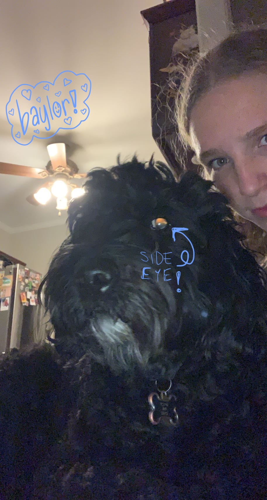
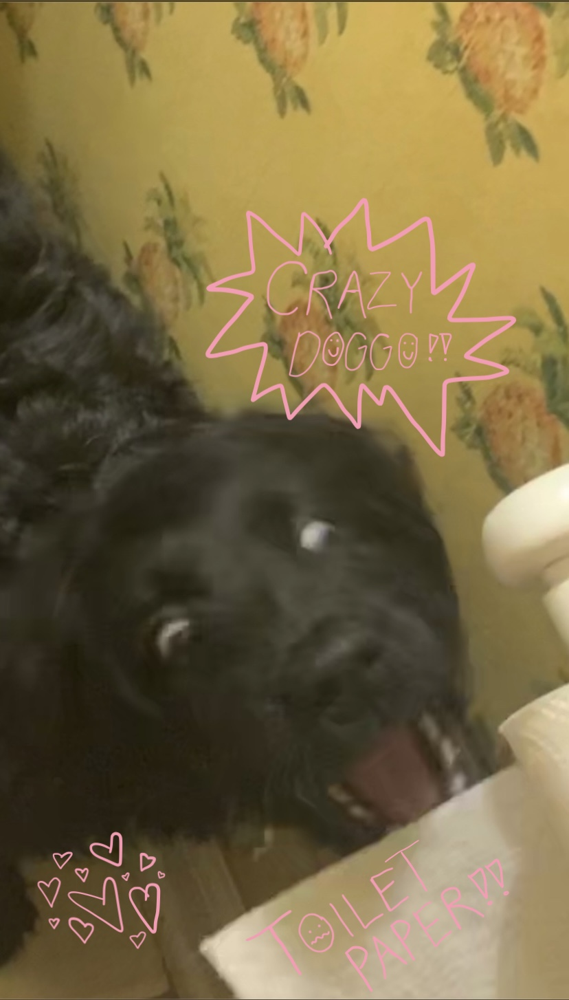
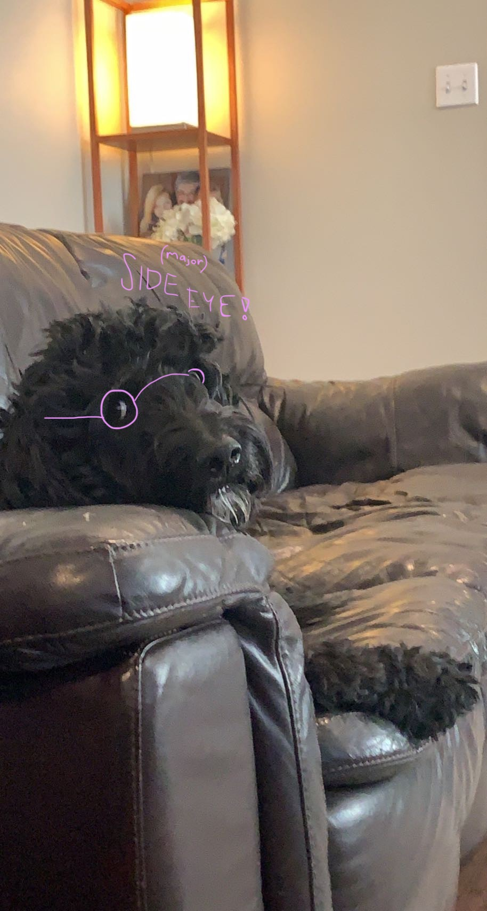
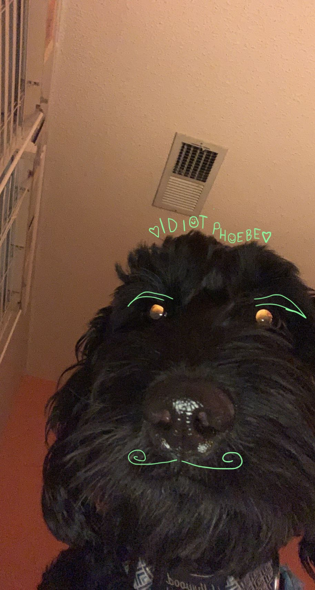

Phoebe May and Baylor Rue !!
pups
I have two wonderful doggos! Baylor and Phoebe! They are goldendoodles and quite possibly the best dogs on the planet right now. They are very silly and awkward and at times quite stupid, but also super smart. They're my favorite people even though they're technically not people. They do act like it though!
baylor
Baylor is the pup we got about six years ago. She is a very wholesome dog. I think she's best known for her side eye. She's quite possibly the most awkward dog you will ever encounter. She will constantly stare at you out of the side of her eye, and if you look at her, and catch her, she will immediately look away.
pheebs
Phoebe is almsot 2 years old! She's simultaneosly the smartest and dumbest dog ever. Her one main talent is opening and closing doors, so every time we let her out to go to the bathroom, she won't come inside when we open the door for her. She'll wait until we close the door, and then she'll jump up, press down on the handle, and let herself in. She has to do it herself, or she just won't come inside.
their relationship
Honestly my dogs relationship with each other is highkey toxic. They both relentlessly bully each other and fight all the time. Phoebe is a very jelly dog, so if I give Baylor almost any attention, she'll start biting Baylor's tail. She also will push Baylor out of the way if I'm petting her. Baylor bites back a lot of the time, and then Phoebe just scampers away cause she's a scaredy cat.



